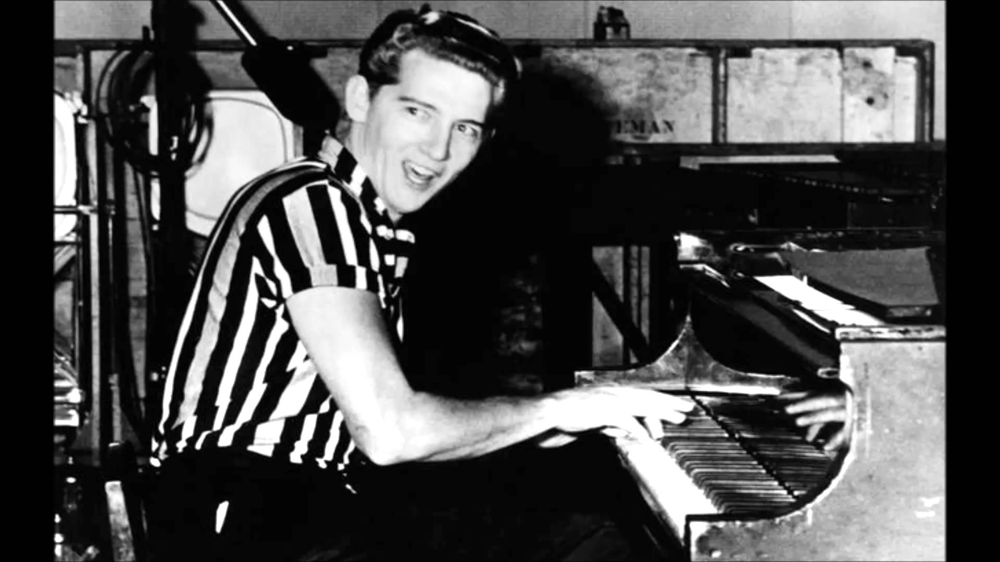
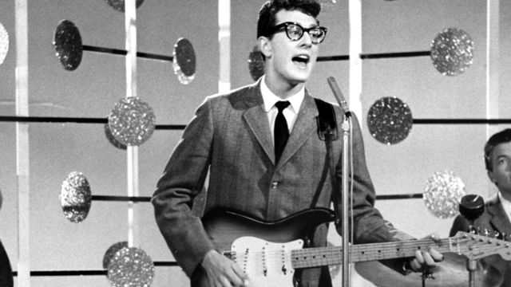
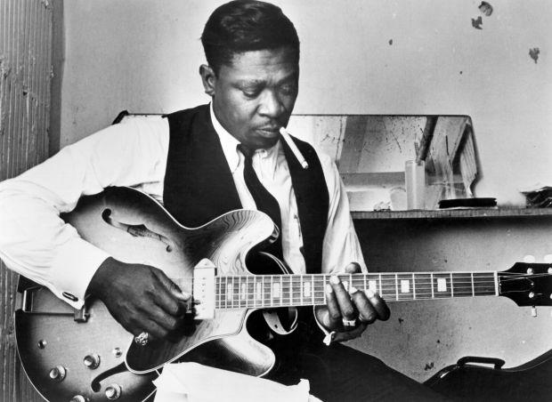
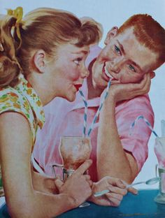

Rock 'n' Roll: The Birth of Youth Culture


Explore the revolutionary 1950s era that defined modern popular music. Master the musical language, signature studio capture techniques, and key artists required for Edexcel Component 3.
How to Score Top Marks on the 1950s
Examiners test your dual understanding of musical construction (AO3) and studio recording technology (AO4).
🎵 AO3: Musical & Stylistic Features
- ✓ 12-bar blues progressions in I – IV – V
- ✓ Swung shuffle 8th notes and energetic 140+ BPM
- ✓ Snare drum backbeat on beats 2 and 4
- ✓ Walking basslines & boogie-woogie piano triplets
🎛️ AO4: Studio Capture & Technology
- ✓ 1-track (mono) or early 2-track tape machines
- ✓ Balancing live in the room via mic distance & bleed
- ✓ 50–80 ms slapback tape delay (Sun Studio)
- ✓ Valve amp overdrive & acoustic echo chambers
Where Did Rock 'n' Roll Begin?
Rock 'n' Roll was not invented overnight. It emerged through the cross-pollination of African-American Rhythm & Blues, Delta Blues, Gospel, and Country/Western Swing.
Development of the Blues
Pioneers like B.B. King and Muddy Waters electrified the blues, introducing overdriven valve tube amps, vocal-like string bends, and raw emotional power that directly informed early rock lead guitar playing.

B.B. King • The Electric Blues FoundationThe Invention of the "Teenager"
Post-war prosperity in 1950s America produced a brand-new demographic: 15–16 year olds with money and no adult responsibilities.
- ★ 7-inch 45 RPM Vinyl: Cheap, durable singles that teens could buy with pocket money.
- ★ Transistor Radios & Jukeboxes: Music listening moved out of the family living room into milk bars and bedrooms.
- ★ Rebellion: Conservative media branded Rock 'n' Roll as dangerous, accelerating youth rebellion.

Diner / Jukebox BoomBill Haley & His Comets
"Rock Around the Clock" (1954)
Historical Contribution: The first white musicians to bring Rock 'n' Roll to the attention of mainstream America and the world. Featured in the 1955 movie Blackboard Jungle.
Musical Features: Fused western swing slap-bass with jump blues, bright energetic tenor saxophone solos, and syncopated snare accents.